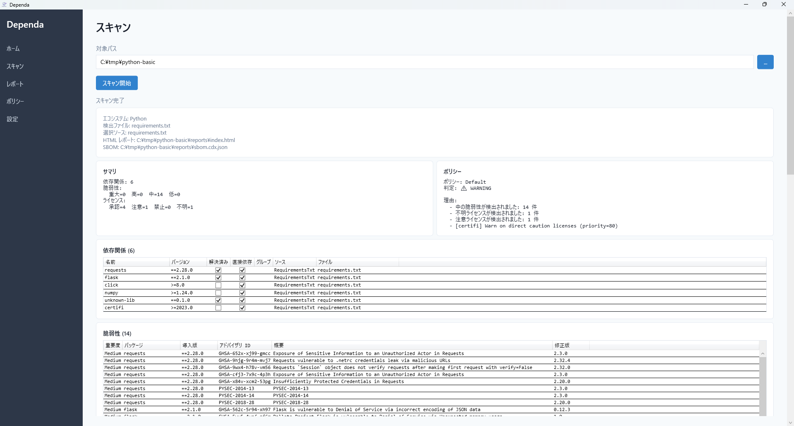
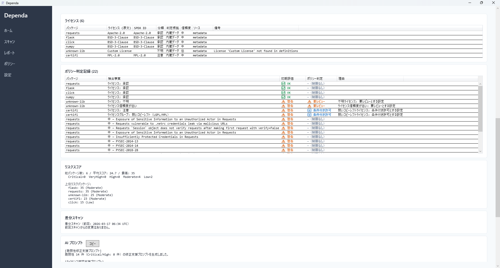

Dependa
依存ライブラリのリスクを、あなたの PC 上でレビュー
クラウドにコードを送らず、脆弱性・ライセンス・互換性を分析。セキュリティレビューや OSS 審査に使えるレポートを生成します。
Python Node.js NuGet (.NET) CycloneDX SBOM オフライン優先なぜ Dependa が必要か
現代のソフトウェアは、数十から数百のオープンソースライブラリに依存しています。それらのセキュリティ、ライセンス、互換性のリスクを把握するのは簡単ではありません。
多くの SCA（Software Composition Analysis）ツールは CI/CD パイプライン向けに設計されていますが、リリース前に人間がレビューする工程では、見やすいレポートが求められます。
Dependa は、依存ライブラリのリスクを分析し、チームで共有できるレビューレポートを生成します。分析はすべてあなたの PC 上で完結します。クラウドへのアップロードは不要です。




v1.1.0 新機能: ポリシー評価と判定理由の可視化
v1.1.0 では、OSS 依存関係の検出結果に対して、組織ポリシーに基づく判定とその理由を GUI・HTML レポート・CSV で確認できるようになりました。
単なる検出ではなく、審査・説明・共有に使えるローカルレビュー支援ツールとして利用できます。
無料機能
Python / NuGet スキャン
requirements.txt や .csproj などを自動で検出・解析。脆弱性データを内蔵しているので、ネット接続なしで検出できます。
脆弱性の照合
内蔵データで既知の脆弱性を検出し、深刻度（Critical / High / Medium / Low）ごとに分類します。
ライセンスの分類と信頼度
ライセンスを自動で分類（承認 / 注意 / 禁止 / 不明）。判定の信頼度も表示するので、どこまで信頼できるかがわかります。
レポートとエクスポート
HTML レポート、SBOM（CycloneDX）、OSS 一覧表（CSV）、ライセンス通知文書をワンクリックで生成。
Pro 機能 PRO
- Node.js 対応 — package.json / package-lock.json のスキャン
- 最新の脆弱性情報 — OSV API で最新の脆弱性データを取得して照合
- ライセンスのオンライン検証 — PyPI / npm / NuGet の公式情報で判定を照合し、信頼度を引き上げ
- リスクスコア — パッケージごとに 0〜100 のスコアでリスクを定量化
- OSS 利用審査の支援 — 推奨アクション、商用利用の注意点、チェックリストを生成
- 差分比較（Delta Scan） — 前回のスキャン結果と比較し、変化点を検出
- 審査レポートの出力 — OSS 一覧表（CSV）や審査レポート（Markdown）をエクスポート
- AI 向けプロンプト — 脆弱性の修正やライセンスの確認に使えるプロンプトを生成
他のツールとの違い
Dependa は CI ツールの代替ではなく、人間がレビューする工程に特化したツールです。
| Snyk | Trivy | Dependency-Check | Dependa | |
|---|---|---|---|---|
| CI/CD 自動化向け | ✓ | ✓ | ✓ | optional |
| クラウド不要 | — | ✓ | ✓ | ✓ |
| 人間が読めるレビューレポート | — | — | — | ✓ |
| ローカル実行 | — | ✓ | ✓ | ✓ |
| デスクトップ GUI | — | — | — | ✓ |
| ライセンス信頼度スコア | — | — | — | ✓ |
Dependa は CI ツールと併用できます。CI で自動チェック、Dependa でレビューレポート作成という使い分けが効果的です。
対応エコシステム
| エコシステム | 対応ファイル | プラン |
|---|---|---|
| Python | requirements.txt, pyproject.toml, poetry.lock, uv.lock | Free |
| NuGet (.NET) | .csproj, packages.config | Free |
| Node.js | package.json, package-lock.json | Pro |
プライバシー: 分析はすべて PC 上で完結します。無料版はインターネットに一切接続しません。Pro 版のオンライン機能も、ユーザーが明示的に有効にした場合のみ、公開されている脆弱性データベース等を参照します。個人情報の送信は一切行いません。
Microsoft Store からインストールできます。自動更新対応、ランタイムの追加インストールは不要です。

システム要件
- Windows 10 バージョン 2004 (19041) 以降 / Windows 11
- WebView2 Runtime（通常は Windows に同梱）
- ディスク: 約 80 MB / RAM: 512 MB 以上